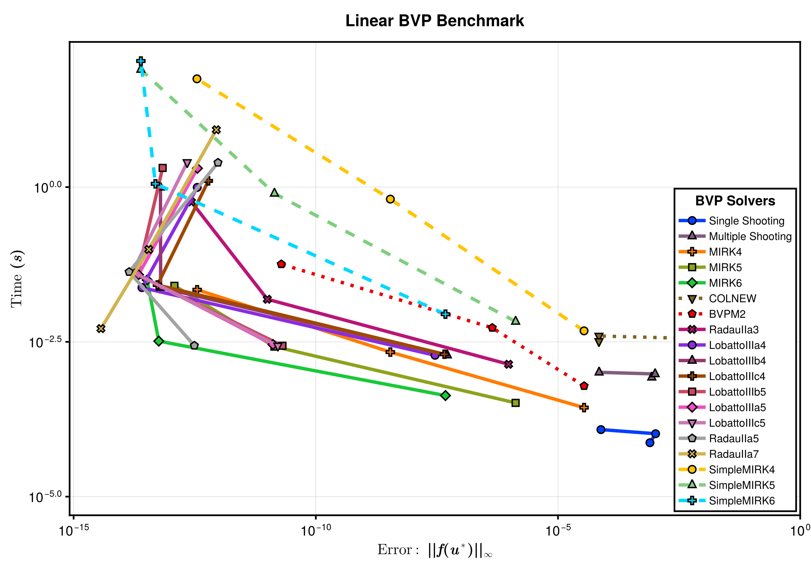
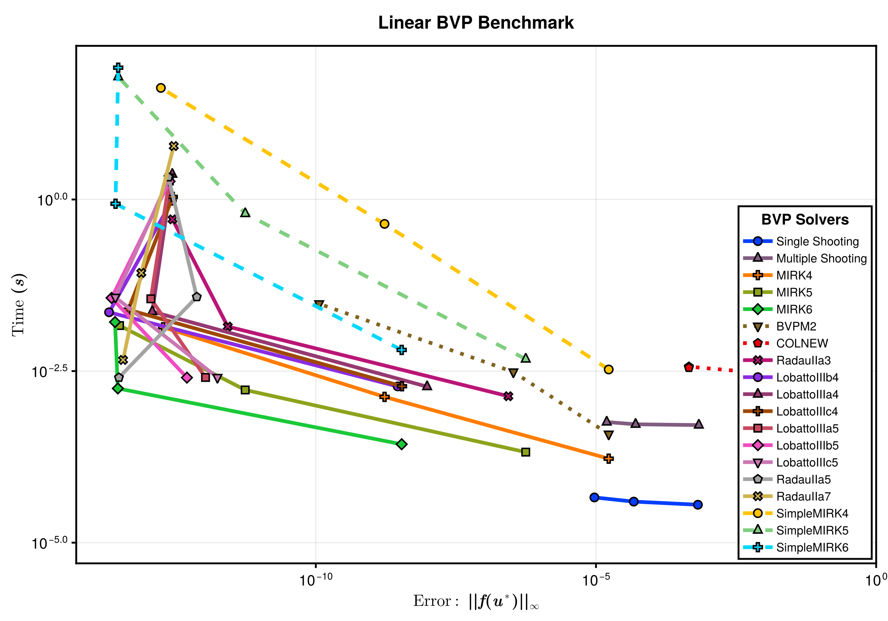
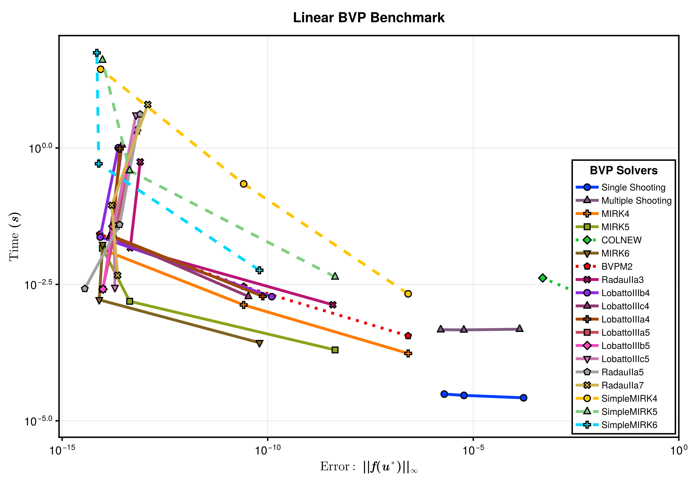
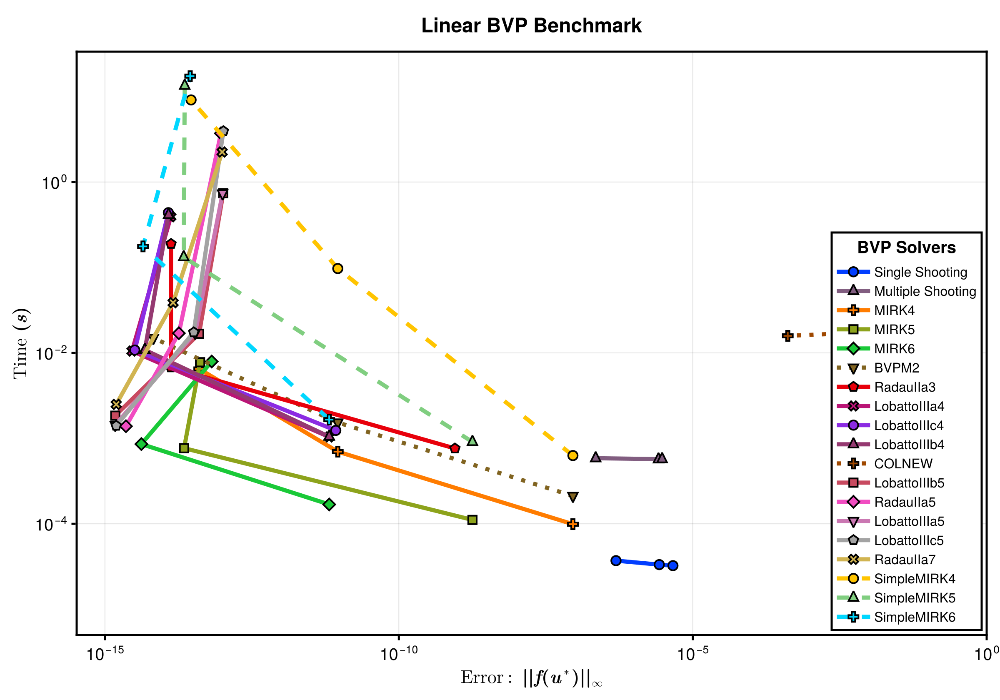
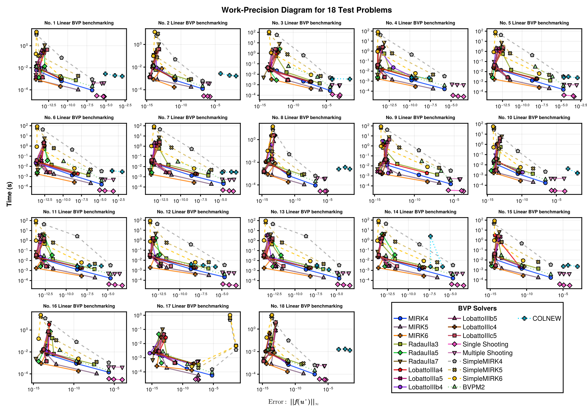

Linear BVP Benchmarks
This benchmark compares the runtime and error of BVP solvers, including MIRK solvers, FIRK solvers, Shooting solvers and FORTRAN BVP solvers on linear boundary value problems. The testing BVPs are a set of standard BVP test problems as described here. The problems are implemented in BVProblemLibrary.jl, where you can find the problem function declarations. For each problem, we test the following solvers:
- BoundaryValueDiffEq.jl's MIRK methods(including
MIRK4,MIRK5,MIRK6). - BoundaryValueDiffEq.jl's Shooting methods(including
Shooting,MultipleShooting). - BoundaryValueDiffEq.jl's FIRK methods(including
RadauIIa3,RadauIIa5,RadauIIa7,LobattoIIIa4,LobattoIIIa5,LobattoIIIb4,LobattoIIIb5,LobattoIIIc4,LobattoIIIc5). - SimpleBoundaryValueDiffEq.jl's MIRK methods(including
SimpleMIRK4,SimpleMIRK5,SimpleMIRK6). - FORTRAN BVP solvers from ODEInterface.jl(including
BVPM2andCOLNEW).
Setup
Fetch required packages.
using BoundaryValueDiffEq, SimpleBoundaryValueDiffEq, OrdinaryDiffEq, ODEInterface, DiffEqDevTools, BenchmarkTools,
BVProblemLibrary, CairoMakieSet up the benchmarked solvers.
solvers_all = [
(; pkg = :boundaryvaluediffeq, type = :mirk, name = "MIRK4", solver = Dict(:alg => MIRK4(), :dts=>1.0 ./ 10.0 .^ (1:4))),
(; pkg = :boundaryvaluediffeq, type = :mirk, name = "MIRK5", solver = Dict(:alg => MIRK5(), :dts=>1.0 ./ 10.0 .^ (1:4))),
(; pkg = :boundaryvaluediffeq, type = :mirk, name = "MIRK6", solver = Dict(:alg => MIRK6(), :dts=>1.0 ./ 10.0 .^ (1:4))),
(; pkg = :boundaryvaluediffeq, type = :firk, name = "RadauIIa3", solver = Dict(:alg => RadauIIa3(), :dts=>1.0 ./ 10.0 .^ (1:4))),
(; pkg = :boundaryvaluediffeq, type = :firk, name = "RadauIIa5", solver = Dict(:alg => RadauIIa5(), :dts=>1.0 ./ 10.0 .^ (1:4))),
(; pkg = :boundaryvaluediffeq, type = :firk, name = "RadauIIa7", solver = Dict(:alg => RadauIIa7(), :dts=>1.0 ./ 10.0 .^ (1:4))),
(; pkg = :boundaryvaluediffeq, type = :firk, name = "LobattoIIIa4", solver = Dict(:alg => LobattoIIIa4(), :dts=>1.0 ./ 10.0 .^ (1:4))),
(; pkg = :boundaryvaluediffeq, type = :firk, name = "LobattoIIIa5", solver = Dict(:alg => LobattoIIIa5(), :dts=>1.0 ./ 10.0 .^ (1:4))),
(; pkg = :boundaryvaluediffeq, type = :firk, name = "LobattoIIIb4", solver = Dict(:alg => LobattoIIIb4(), :dts=>1.0 ./ 10.0 .^ (1:4))),
(; pkg = :boundaryvaluediffeq, type = :firk, name = "LobattoIIIb5", solver = Dict(:alg => LobattoIIIb5(), :dts=>1.0 ./ 10.0 .^ (1:4))),
(; pkg = :boundaryvaluediffeq, type = :firk, name = "LobattoIIIc4", solver = Dict(:alg => LobattoIIIc4(), :dts=>1.0 ./ 10.0 .^ (1:4))),
(; pkg = :boundaryvaluediffeq, type = :firk, name = "LobattoIIIc5", solver = Dict(:alg => LobattoIIIc5(), :dts=>1.0 ./ 10.0 .^ (1:4))),
(; pkg = :boundaryvaluediffeq, type = :shooting, name = "Single Shooting", solver = Dict(:alg => Shooting(Tsit5(), NewtonRaphson()), :dts=>1.0 ./ 10.0 .^ (1:4))),
(; pkg = :boundaryvaluediffeq, type = :shooting, name = "Multiple Shooting", solver = Dict(:alg => MultipleShooting(10, Tsit5()), :dts=>1.0 ./ 10.0 .^ (1:4))),
(; pkg = :simpleboundaryvaluediffeq, type = :simplemirk, name = "SimpleMIRK4", solver = Dict(:alg => SimpleMIRK4(), :dts=>1.0 ./ 10.0 .^ (1:4))),
(; pkg = :simpleboundaryvaluediffeq, type = :simplemirk, name = "SimpleMIRK5", solver = Dict(:alg => SimpleMIRK5(), :dts=>1.0 ./ 10.0 .^ (1:4))),
(; pkg = :simpleboundaryvaluediffeq, type = :simplemirk, name = "SimpleMIRK6", solver = Dict(:alg => SimpleMIRK6(), :dts=>1.0 ./ 10.0 .^ (1:4))),
(; pkg = :wrapper, type = :general, name = "BVPM2", solver = Dict(:alg => BVPM2(), :dts=>1.0 ./ 10.0 .^ (1:4))),
(; pkg = :wrapper, type = :general, name = "COLNEW", solver = Dict(:alg => COLNEW(), :dts=>1.0 ./ 10.0 .^ (1:4))),
];
solver_tracker = [];
wp_general_tracker = [];Sets tolerances.
abstols = 1.0 ./ 10.0 .^ (1:3)
reltols = 1.0 ./ 10.0 .^ (1:3);Prepares helper function for benchmarking a specific problem.
function benchmark(prob)
sol = solve(prob, Shooting(Vern7()), abstol=1e-14, reltol=1e-14)
testsol = TestSolution(sol)
wps = WorkPrecisionSet(prob, abstols, reltols, getfield.(solvers_all, :solver); names = getfield.(solvers_all, :name), appxsol = testsol, maxiters=Int(1e4))
push!(wp_general_tracker, wps)
return wps
end
function plot_wpd(wp_set)
fig = begin
LINESTYLES = Dict(:boundaryvaluediffeq => :solid, :simpleboundaryvaluediffeq => :dash, :wrapper => :dot)
ASPECT_RATIO = 0.7
WIDTH = 1200
HEIGHT = round(Int, WIDTH * ASPECT_RATIO)
STROKEWIDTH = 2.5
colors = cgrad(:seaborn_bright, length(solvers_all); categorical = true)
cycle = Cycle([:marker], covary = true)
plot_theme = Theme(Lines = (; cycle), Scatter = (; cycle))
with_theme(plot_theme) do
fig = Figure(; size = (WIDTH, HEIGHT))
ax = Axis(fig[1, 1], ylabel = L"Time $\mathbf{(s)}$",
xlabelsize = 22, ylabelsize = 22,
xlabel = L"Error: $\mathbf{||f(u^\ast)||_\infty}$",
xscale = log10, yscale = log10, xtickwidth = STROKEWIDTH,
ytickwidth = STROKEWIDTH, spinewidth = STROKEWIDTH,
xticklabelsize = 20, yticklabelsize = 20)
idxs = sortperm(median.(getfield.(wp_set.wps, :times)))
ls, scs = [], []
for (i, (wp, solver)) in enumerate(zip(wp_set.wps[idxs], solvers_all[idxs]))
(; name, times, errors) = wp
errors = [err.l∞ for err in errors]
l = lines!(ax, errors, times; linestyle = LINESTYLES[solver.pkg], label = name,
linewidth = 5, color = colors[i])
sc = scatter!(ax, errors, times; label = name, markersize = 16, strokewidth = 2,
color = colors[i])
push!(ls, l)
push!(scs, sc)
end
xlims!(ax; high=1)
ylims!(ax; low=5e-6)
axislegend(ax, [[l, sc] for (l, sc) in zip(ls, scs)],
[solver.name for solver in solvers_all[idxs]], "BVP Solvers";
framevisible=true, framewidth = STROKEWIDTH, position = :rb,
titlesize = 20, labelsize = 16, patchsize = (40.0f0, 20.0f0))
fig[0, :] = Label(fig, "Linear BVP Benchmark",
fontsize = 24, tellwidth = false, font = :bold)
fig
end
end
endplot_wpd (generic function with 1 method)Benchmarks
We here run benchmarks for each of the 18 test problems.
Linear BVP 1
prob_1 = BVProblemLibrary.prob_bvp_linear_1
wps = benchmark(prob_1)
plot_wpd(wps)
Linear BVP 2
prob_2 = BVProblemLibrary.prob_bvp_linear_2
wps = benchmark(prob_2)
plot_wpd(wps)
Linear BVP 3
prob_3 = BVProblemLibrary.prob_bvp_linear_3
wps = benchmark(prob_3)
plot_wpd(wps)
Linear BVP 4
prob_4 = BVProblemLibrary.prob_bvp_linear_4
wps = benchmark(prob_4)
plot_wpd(wps)
Linear BVP 5
prob_5 = BVProblemLibrary.prob_bvp_linear_5
wps = benchmark(prob_5)
plot_wpd(wps)
Linear BVP 6
prob_6 = BVProblemLibrary.prob_bvp_linear_6
wps = benchmark(prob_6)
plot_wpd(wps)
Linear BVP 7
prob_7 = BVProblemLibrary.prob_bvp_linear_7
wps = benchmark(prob_7)
plot_wpd(wps)
Linear BVP 8
prob_8 = BVProblemLibrary.prob_bvp_linear_8
wps = benchmark(prob_8)
plot_wpd(wps)
Linear BVP 9
prob_9 = BVProblemLibrary.prob_bvp_linear_9
wps = benchmark(prob_9)
plot_wpd(wps)
Linear BVP 10
prob_10 = BVProblemLibrary.prob_bvp_linear_10
wps = benchmark(prob_10)
plot_wpd(wps)
Linear BVP 11
prob_11 = BVProblemLibrary.prob_bvp_linear_11
wps = benchmark(prob_11)
plot_wpd(wps)
Linear BVP 12
prob_12 = BVProblemLibrary.prob_bvp_linear_12
wps = benchmark(prob_12)
plot_wpd(wps)
Linear BVP 13
prob_13 = BVProblemLibrary.prob_bvp_linear_13
wps = benchmark(prob_13)
plot_wpd(wps)
Linear BVP 14
prob_14 = BVProblemLibrary.prob_bvp_linear_14
wps = benchmark(prob_14)
plot_wpd(wps)
Linear BVP 15
prob_15 = BVProblemLibrary.prob_bvp_linear_15
wps = benchmark(prob_15)
plot_wpd(wps)
Linear BVP 16
prob_16 = BVProblemLibrary.prob_bvp_linear_16
wps = benchmark(prob_16)
plot_wpd(wps)
Linear BVP 17
prob_17 = BVProblemLibrary.prob_bvp_linear_17
wps = benchmark(prob_17)
plot_wpd(wps)
Linear BVP 18
prob_18 = BVProblemLibrary.prob_bvp_linear_18
wps = benchmark(prob_18)
plot_wpd(wps)
Summary of General Solvers Performance on All Problems
fig = begin
LINESTYLES = Dict(:boundaryvaluediffeq => :solid, :simpleboundaryvaluediffeq => :dash, :wrapper => :dot)
ASPECT_RATIO = 0.7
WIDTH = 1800
HEIGHT = round(Int, WIDTH * ASPECT_RATIO)
STROKEWIDTH = 2.5
colors = cgrad(:seaborn_bright, length(solvers_all); categorical = true)
cycle = Cycle([:marker], covary = true)
plot_theme = Theme(Lines = (; cycle), Scatter = (; cycle))
with_theme(plot_theme) do
fig = Figure(; size = (WIDTH, HEIGHT))
axs = Matrix{Any}(undef, 5, 5)
ls = []
scs = []
labels = []
solver_times = []
for i in 1:4, j in 1:5
idx = 5 * (i - 1) + j
idx > length(wp_general_tracker) && break
wp = wp_general_tracker[idx]
ax = Axis(fig[i, j],
xscale = log10, yscale = log10,
xtickwidth = STROKEWIDTH,
ytickwidth = STROKEWIDTH, spinewidth = STROKEWIDTH,
title = "No. $(idx) Linear BVP benchmarking", titlegap = 10,
xticklabelsize = 16, yticklabelsize = 16)
for wpᵢ in wp.wps
idx = findfirst(s -> s.name == wpᵢ.name, solvers_all)
errs = getindex.(wpᵢ.errors, :l∞)
times = wpᵢ.times
l = lines!(ax, errs, times; color = colors[idx], linewidth = 3,
linestyle = LINESTYLES[solvers_all[idx].pkg], alpha = 0.8,
label = wpᵢ.name)
sc = scatter!(ax, errs, times; color = colors[idx], markersize = 16,
strokewidth = 2, marker = Cycled(idx), alpha = 0.8, label = wpᵢ.name)
if wpᵢ.name ∉ labels
push!(ls, l)
push!(scs, sc)
push!(labels, wpᵢ.name)
end
end
end
fig[0, :] = Label(fig, "Work-Precision Diagram for 18 Test Problems",
fontsize = 24, tellwidth = false, font = :bold)
fig[:, 0] = Label(fig, "Time (s)", fontsize = 20, tellheight = false, font = :bold,
rotation = π / 2)
fig[end + 1, :] = Label(fig,
L"Error: $\mathbf{||f(u^\ast)||_\infty}$",
fontsize = 20, tellwidth = false, font = :bold)
Legend(fig[4, 4:5], [[l, sc] for (l, sc) in zip(ls, scs)],
labels, "BVP Solvers";
framevisible=true, framewidth = STROKEWIDTH, orientation = :horizontal,
titlesize = 20, nbanks = 9, labelsize = 20, halign = :center,
tellheight = false, tellwidth = false, patchsize = (40.0f0, 20.0f0))
return fig
end
end
Appendix
These benchmarks are a part of the SciMLBenchmarks.jl repository, found at: https://github.com/SciML/SciMLBenchmarks.jl. For more information on high-performance scientific machine learning, check out the SciML Open Source Software Organization https://sciml.ai.
To locally run this benchmark, do the following commands:
using SciMLBenchmarks
SciMLBenchmarks.weave_file("benchmarks/NonStiffBVP","linear_wpd.jmd")Computer Information:
Julia Version 1.10.5
Commit 6f3fdf7b362 (2024-08-27 14:19 UTC)
Build Info:
Official https://julialang.org/ release
Platform Info:
OS: Linux (x86_64-linux-gnu)
CPU: 128 × AMD EPYC 7502 32-Core Processor
WORD_SIZE: 64
LIBM: libopenlibm
LLVM: libLLVM-15.0.7 (ORCJIT, znver2)
Threads: 1 default, 0 interactive, 1 GC (on 128 virtual cores)
Environment:
JULIA_CPU_THREADS = 128
JULIA_DEPOT_PATH = /cache/julia-buildkite-plugin/depots/5b300254-1738-4989-ae0a-f4d2d937f953
Package Information:
Status `/cache/build/exclusive-amdci1-0/julialang/scimlbenchmarks-dot-jl/benchmarks/NonStiffBVP/Project.toml`
[ded0fc24] BVProblemLibrary v0.1.5
[6e4b80f9] BenchmarkTools v1.5.0
[764a87c0] BoundaryValueDiffEq v5.11.0
[13f3f980] CairoMakie v0.12.14
[f3b72e0c] DiffEqDevTools v2.45.1
[54ca160b] ODEInterface v0.5.0
[1dea7af3] OrdinaryDiffEq v6.89.0
[91a5bcdd] Plots v1.40.8
[31c91b34] SciMLBenchmarks v0.1.3 `../..`
[be0294bd] SimpleBoundaryValueDiffEq v1.1.0And the full manifest:
Status `/cache/build/exclusive-amdci1-0/julialang/scimlbenchmarks-dot-jl/benchmarks/NonStiffBVP/Manifest.toml`
[47edcb42] ADTypes v1.9.0
[621f4979] AbstractFFTs v1.5.0
[1520ce14] AbstractTrees v0.4.5
[7d9f7c33] Accessors v0.1.38
[79e6a3ab] Adapt v4.0.4
[35492f91] AdaptivePredicates v1.2.0
[66dad0bd] AliasTables v1.1.3
[27a7e980] Animations v0.4.1
[ec485272] ArnoldiMethod v0.4.0
[4fba245c] ArrayInterface v7.16.0
[4c555306] ArrayLayouts v1.10.3
[67c07d97] Automa v1.0.4
[13072b0f] AxisAlgorithms v1.1.0
[39de3d68] AxisArrays v0.4.7
[ded0fc24] BVProblemLibrary v0.1.5
[aae01518] BandedMatrices v1.7.5
[6e4b80f9] BenchmarkTools v1.5.0
[d1d4a3ce] BitFlags v0.1.9
[62783981] BitTwiddlingConvenienceFunctions v0.1.6
[764a87c0] BoundaryValueDiffEq v5.11.0
[fa961155] CEnum v0.5.0
[2a0fbf3d] CPUSummary v0.2.6
[336ed68f] CSV v0.10.14
[159f3aea] Cairo v1.1.0
[13f3f980] CairoMakie v0.12.14
[d360d2e6] ChainRulesCore v1.25.0
[fb6a15b2] CloseOpenIntervals v0.1.13
[944b1d66] CodecZlib v0.7.6
[a2cac450] ColorBrewer v0.4.0
[35d6a980] ColorSchemes v3.26.0
[3da002f7] ColorTypes v0.11.5
[c3611d14] ColorVectorSpace v0.10.0
[5ae59095] Colors v0.12.11
[38540f10] CommonSolve v0.2.4
[bbf7d656] CommonSubexpressions v0.3.1
[f70d9fcc] CommonWorldInvalidations v1.0.0
[34da2185] Compat v4.16.0
[a33af91c] CompositionsBase v0.1.2
[2569d6c7] ConcreteStructs v0.2.3
[f0e56b4a] ConcurrentUtilities v2.4.2
[8f4d0f93] Conda v1.10.2
[187b0558] ConstructionBase v1.5.8
[d38c429a] Contour v0.6.3
[adafc99b] CpuId v0.3.1
[a8cc5b0e] Crayons v4.1.1
[9a962f9c] DataAPI v1.16.0
[a93c6f00] DataFrames v1.7.0
[864edb3b] DataStructures v0.18.20
[e2d170a0] DataValueInterfaces v1.0.0
[927a84f5] DelaunayTriangulation v1.6.0
[8bb1440f] DelimitedFiles v1.9.1
[2b5f629d] DiffEqBase v6.158.1
[f3b72e0c] DiffEqDevTools v2.45.1
[77a26b50] DiffEqNoiseProcess v5.23.0
[163ba53b] DiffResults v1.1.0
[b552c78f] DiffRules v1.15.1
⌃ [a0c0ee7d] DifferentiationInterface v0.6.13
[b4f34e82] Distances v0.10.11
[31c24e10] Distributions v0.25.112
[ffbed154] DocStringExtensions v0.9.3
[4e289a0a] EnumX v1.0.4
[f151be2c] EnzymeCore v0.8.4
[429591f6] ExactPredicates v2.2.8
[460bff9d] ExceptionUnwrapping v0.1.10
[d4d017d3] ExponentialUtilities v1.26.1
[e2ba6199] ExprTools v0.1.10
⌅ [6b7a57c9] Expronicon v0.8.5
[411431e0] Extents v0.1.4
[c87230d0] FFMPEG v0.4.2
[7a1cc6ca] FFTW v1.8.0
[9d29842c] FastAlmostBandedMatrices v0.1.4
[7034ab61] FastBroadcast v0.3.5
[9aa1b823] FastClosures v0.3.2
[29a986be] FastLapackInterface v2.0.4
[5789e2e9] FileIO v1.16.4
[8fc22ac5] FilePaths v0.8.3
[48062228] FilePathsBase v0.9.22
[1a297f60] FillArrays v1.13.0
[6a86dc24] FiniteDiff v2.26.0
[53c48c17] FixedPointNumbers v0.8.5
[1fa38f19] Format v1.3.7
[f6369f11] ForwardDiff v0.10.36
[b38be410] FreeType v4.1.1
[663a7486] FreeTypeAbstraction v0.10.3
[069b7b12] FunctionWrappers v1.1.3
[77dc65aa] FunctionWrappersWrappers v0.1.3
[46192b85] GPUArraysCore v0.1.6
[28b8d3ca] GR v0.73.8
[c145ed77] GenericSchur v0.5.4
[68eda718] GeoFormatTypes v0.4.2
[cf35fbd7] GeoInterface v1.3.7
[5c1252a2] GeometryBasics v0.4.11
[d7ba0133] Git v1.3.1
[a2bd30eb] Graphics v1.1.2
[86223c79] Graphs v1.12.0
[3955a311] GridLayoutBase v0.11.0
[42e2da0e] Grisu v1.0.2
[cd3eb016] HTTP v1.10.8
[eafb193a] Highlights v0.5.3
[3e5b6fbb] HostCPUFeatures v0.1.17
[34004b35] HypergeometricFunctions v0.3.24
[7073ff75] IJulia v1.25.0
[615f187c] IfElse v0.1.1
[2803e5a7] ImageAxes v0.6.11
[c817782e] ImageBase v0.1.7
[a09fc81d] ImageCore v0.10.2
[82e4d734] ImageIO v0.6.8
[bc367c6b] ImageMetadata v0.9.9
[9b13fd28] IndirectArrays v1.0.0
[d25df0c9] Inflate v0.1.5
[842dd82b] InlineStrings v1.4.2
[a98d9a8b] Interpolations v0.15.1
[d1acc4aa] IntervalArithmetic v0.22.17
[8197267c] IntervalSets v0.7.10
[3587e190] InverseFunctions v0.1.17
[41ab1584] InvertedIndices v1.3.0
[92d709cd] IrrationalConstants v0.2.2
[f1662d9f] Isoband v0.1.1
[c8e1da08] IterTools v1.10.0
[82899510] IteratorInterfaceExtensions v1.0.0
[1019f520] JLFzf v0.1.8
[692b3bcd] JLLWrappers v1.6.1
[682c06a0] JSON v0.21.4
[b835a17e] JpegTurbo v0.1.5
[ef3ab10e] KLU v0.6.0
[5ab0869b] KernelDensity v0.6.9
[ba0b0d4f] Krylov v0.9.6
[b964fa9f] LaTeXStrings v1.4.0
[23fbe1c1] Latexify v0.16.5
[10f19ff3] LayoutPointers v0.1.17
[5078a376] LazyArrays v2.2.1
[8cdb02fc] LazyModules v0.3.1
[9c8b4983] LightXML v0.9.1
[87fe0de2] LineSearch v0.1.3
[d3d80556] LineSearches v7.3.0
[7ed4a6bd] LinearSolve v2.35.0
[2ab3a3ac] LogExpFunctions v0.3.28
[e6f89c97] LoggingExtras v1.0.3
[bdcacae8] LoopVectorization v0.12.171
[d8e11817] MLStyle v0.4.17
[1914dd2f] MacroTools v0.5.13
[ee78f7c6] Makie v0.21.14
[20f20a25] MakieCore v0.8.9
[d125e4d3] ManualMemory v0.1.8
[dbb5928d] MappedArrays v0.4.2
[0a4f8689] MathTeXEngine v0.6.1
[a3b82374] MatrixFactorizations v3.0.1
[bb5d69b7] MaybeInplace v0.1.4
[739be429] MbedTLS v1.1.9
[442fdcdd] Measures v0.3.2
[e1d29d7a] Missings v1.2.0
[e94cdb99] MosaicViews v0.3.4
[46d2c3a1] MuladdMacro v0.2.4
[ffc61752] Mustache v1.0.20
[d41bc354] NLSolversBase v7.8.3
[2774e3e8] NLsolve v4.5.1
[77ba4419] NaNMath v1.0.2
[f09324ee] Netpbm v1.1.1
[8913a72c] NonlinearSolve v3.15.1
[54ca160b] ODEInterface v0.5.0
[0f4fe800] OMJulia v0.3.2
[510215fc] Observables v0.5.5
[6fe1bfb0] OffsetArrays v1.14.1
[52e1d378] OpenEXR v0.3.2
[4d8831e6] OpenSSL v1.4.3
[429524aa] Optim v1.9.4
[bac558e1] OrderedCollections v1.6.3
[1dea7af3] OrdinaryDiffEq v6.89.0
[89bda076] OrdinaryDiffEqAdamsBashforthMoulton v1.1.0
[6ad6398a] OrdinaryDiffEqBDF v1.1.2
[bbf590c4] OrdinaryDiffEqCore v1.7.1
[50262376] OrdinaryDiffEqDefault v1.1.0
[4302a76b] OrdinaryDiffEqDifferentiation v1.1.0
[9286f039] OrdinaryDiffEqExplicitRK v1.1.0
[e0540318] OrdinaryDiffEqExponentialRK v1.1.0
[becaefa8] OrdinaryDiffEqExtrapolation v1.1.0
[5960d6e9] OrdinaryDiffEqFIRK v1.1.1
[101fe9f7] OrdinaryDiffEqFeagin v1.1.0
[d3585ca7] OrdinaryDiffEqFunctionMap v1.1.1
[d28bc4f8] OrdinaryDiffEqHighOrderRK v1.1.0
[9f002381] OrdinaryDiffEqIMEXMultistep v1.1.0
[521117fe] OrdinaryDiffEqLinear v1.1.0
[1344f307] OrdinaryDiffEqLowOrderRK v1.2.0
[b0944070] OrdinaryDiffEqLowStorageRK v1.2.1
[127b3ac7] OrdinaryDiffEqNonlinearSolve v1.2.1
[c9986a66] OrdinaryDiffEqNordsieck v1.1.0
[5dd0a6cf] OrdinaryDiffEqPDIRK v1.1.0
[5b33eab2] OrdinaryDiffEqPRK v1.1.0
[04162be5] OrdinaryDiffEqQPRK v1.1.0
[af6ede74] OrdinaryDiffEqRKN v1.1.0
[43230ef6] OrdinaryDiffEqRosenbrock v1.2.0
[2d112036] OrdinaryDiffEqSDIRK v1.1.0
[669c94d9] OrdinaryDiffEqSSPRK v1.2.0
[e3e12d00] OrdinaryDiffEqStabilizedIRK v1.1.0
[358294b1] OrdinaryDiffEqStabilizedRK v1.1.0
[fa646aed] OrdinaryDiffEqSymplecticRK v1.1.0
[b1df2697] OrdinaryDiffEqTsit5 v1.1.0
[79d7bb75] OrdinaryDiffEqVerner v1.1.1
[90014a1f] PDMats v0.11.31
[f57f5aa1] PNGFiles v0.4.3
[65ce6f38] PackageExtensionCompat v1.0.2
[19eb6ba3] Packing v0.5.0
[5432bcbf] PaddedViews v0.5.12
[d96e819e] Parameters v0.12.3
[69de0a69] Parsers v2.8.1
[b98c9c47] Pipe v1.3.0
[eebad327] PkgVersion v0.3.3
[ccf2f8ad] PlotThemes v3.2.0
[995b91a9] PlotUtils v1.4.1
[91a5bcdd] Plots v1.40.8
[e409e4f3] PoissonRandom v0.4.4
[f517fe37] Polyester v0.7.16
[1d0040c9] PolyesterWeave v0.2.2
[647866c9] PolygonOps v0.1.2
[2dfb63ee] PooledArrays v1.4.3
[85a6dd25] PositiveFactorizations v0.2.4
[d236fae5] PreallocationTools v0.4.24
[aea7be01] PrecompileTools v1.2.1
[21216c6a] Preferences v1.4.3
[08abe8d2] PrettyTables v2.4.0
[92933f4c] ProgressMeter v1.10.2
[43287f4e] PtrArrays v1.2.1
[4b34888f] QOI v1.0.0
[1fd47b50] QuadGK v2.11.1
[74087812] Random123 v1.7.0
[e6cf234a] RandomNumbers v1.6.0
[b3c3ace0] RangeArrays v0.3.2
[c84ed2f1] Ratios v0.4.5
[3cdcf5f2] RecipesBase v1.3.4
[01d81517] RecipesPipeline v0.6.12
[731186ca] RecursiveArrayTools v3.27.0
[f2c3362d] RecursiveFactorization v0.2.23
[189a3867] Reexport v1.2.2
[05181044] RelocatableFolders v1.0.1
[ae029012] Requires v1.3.0
[ae5879a3] ResettableStacks v1.1.1
[79098fc4] Rmath v0.8.0
[47965b36] RootedTrees v2.23.1
[5eaf0fd0] RoundingEmulator v0.2.1
[7e49a35a] RuntimeGeneratedFunctions v0.5.13
[fdea26ae] SIMD v3.6.0
[94e857df] SIMDTypes v0.1.0
[476501e8] SLEEFPirates v0.6.43
[0bca4576] SciMLBase v2.56.1
[31c91b34] SciMLBenchmarks v0.1.3 `../..`
[19f34311] SciMLJacobianOperators v0.1.0
[c0aeaf25] SciMLOperators v0.3.10
[53ae85a6] SciMLStructures v1.5.0
[6c6a2e73] Scratch v1.2.1
[91c51154] SentinelArrays v1.4.5
[efcf1570] Setfield v1.1.1
[65257c39] ShaderAbstractions v0.4.1
[992d4aef] Showoff v1.0.3
[73760f76] SignedDistanceFields v0.4.0
[be0294bd] SimpleBoundaryValueDiffEq v1.1.0
[777ac1f9] SimpleBufferStream v1.2.0
[727e6d20] SimpleNonlinearSolve v1.12.3
[699a6c99] SimpleTraits v0.9.4
[ce78b400] SimpleUnPack v1.1.0
[45858cf5] Sixel v0.1.3
[b85f4697] SoftGlobalScope v1.1.0
[a2af1166] SortingAlgorithms v1.2.1
[9f842d2f] SparseConnectivityTracer v0.6.7
[47a9eef4] SparseDiffTools v2.23.0
[0a514795] SparseMatrixColorings v0.4.7
[e56a9233] Sparspak v0.3.9
[276daf66] SpecialFunctions v2.4.0
[cae243ae] StackViews v0.1.1
[aedffcd0] Static v1.1.1
[0d7ed370] StaticArrayInterface v1.8.0
[90137ffa] StaticArrays v1.9.7
[1e83bf80] StaticArraysCore v1.4.3
[82ae8749] StatsAPI v1.7.0
[2913bbd2] StatsBase v0.34.3
[4c63d2b9] StatsFuns v1.3.2
[7792a7ef] StrideArraysCore v0.5.7
[69024149] StringEncodings v0.3.7
[892a3eda] StringManipulation v0.4.0
[09ab397b] StructArrays v0.6.18
⌃ [2efcf032] SymbolicIndexingInterface v0.3.32
[3783bdb8] TableTraits v1.0.1
[bd369af6] Tables v1.12.0
[62fd8b95] TensorCore v0.1.1
[8290d209] ThreadingUtilities v0.5.2
[731e570b] TiffImages v0.10.2
[a759f4b9] TimerOutputs v0.5.25
[3bb67fe8] TranscodingStreams v0.11.3
[d5829a12] TriangularSolve v0.2.1
[981d1d27] TriplotBase v0.1.0
[781d530d] TruncatedStacktraces v1.4.0
[5c2747f8] URIs v1.5.1
[3a884ed6] UnPack v1.0.2
[1cfade01] UnicodeFun v0.4.1
[1986cc42] Unitful v1.21.0
[45397f5d] UnitfulLatexify v1.6.4
[41fe7b60] Unzip v0.2.0
[3d5dd08c] VectorizationBase v0.21.70
[81def892] VersionParsing v1.3.0
[19fa3120] VertexSafeGraphs v0.2.0
[ea10d353] WeakRefStrings v1.4.2
[44d3d7a6] Weave v0.10.12
[efce3f68] WoodburyMatrices v1.0.0
[76eceee3] WorkerUtilities v1.6.1
[ddb6d928] YAML v0.4.12
[c2297ded] ZMQ v1.3.0
[6e34b625] Bzip2_jll v1.0.8+1
[4e9b3aee] CRlibm_jll v1.0.1+0
[83423d85] Cairo_jll v1.18.2+1
[ee1fde0b] Dbus_jll v1.14.10+0
[5ae413db] EarCut_jll v2.2.4+0
[2702e6a9] EpollShim_jll v0.0.20230411+0
[2e619515] Expat_jll v2.6.2+0
⌅ [b22a6f82] FFMPEG_jll v4.4.4+1
[f5851436] FFTW_jll v3.3.10+1
[a3f928ae] Fontconfig_jll v2.13.96+0
[d7e528f0] FreeType2_jll v2.13.2+0
[559328eb] FriBidi_jll v1.0.14+0
[0656b61e] GLFW_jll v3.4.0+1
[d2c73de3] GR_jll v0.73.8+0
[78b55507] Gettext_jll v0.21.0+0
[f8c6e375] Git_jll v2.46.2+0
[7746bdde] Glib_jll v2.80.5+0
[3b182d85] Graphite2_jll v1.3.14+0
[2e76f6c2] HarfBuzz_jll v8.3.1+0
[905a6f67] Imath_jll v3.1.11+0
[1d5cc7b8] IntelOpenMP_jll v2024.2.1+0
[aacddb02] JpegTurbo_jll v3.0.4+0
[c1c5ebd0] LAME_jll v3.100.2+0
[88015f11] LERC_jll v4.0.0+0
[1d63c593] LLVMOpenMP_jll v18.1.7+0
[dd4b983a] LZO_jll v2.10.2+1
⌅ [e9f186c6] Libffi_jll v3.2.2+1
[d4300ac3] Libgcrypt_jll v1.8.11+0
[7e76a0d4] Libglvnd_jll v1.6.0+0
[7add5ba3] Libgpg_error_jll v1.49.0+0
[94ce4f54] Libiconv_jll v1.17.0+0
[4b2f31a3] Libmount_jll v2.40.1+0
[89763e89] Libtiff_jll v4.7.0+0
[38a345b3] Libuuid_jll v2.40.1+0
[856f044c] MKL_jll v2024.2.0+0
[c771fb93] ODEInterface_jll v0.0.1+0
[e7412a2a] Ogg_jll v1.3.5+1
[18a262bb] OpenEXR_jll v3.2.4+0
[458c3c95] OpenSSL_jll v3.0.15+1
[efe28fd5] OpenSpecFun_jll v0.5.5+0
[91d4177d] Opus_jll v1.3.3+0
[36c8627f] Pango_jll v1.54.1+0
[30392449] Pixman_jll v0.43.4+0
[c0090381] Qt6Base_jll v6.7.1+1
[629bc702] Qt6Declarative_jll v6.7.1+2
[ce943373] Qt6ShaderTools_jll v6.7.1+1
[e99dba38] Qt6Wayland_jll v6.7.1+1
[f50d1b31] Rmath_jll v0.5.1+0
[a44049a8] Vulkan_Loader_jll v1.3.243+0
[a2964d1f] Wayland_jll v1.21.0+1
[2381bf8a] Wayland_protocols_jll v1.31.0+0
[02c8fc9c] XML2_jll v2.13.3+0
[aed1982a] XSLT_jll v1.1.41+0
[ffd25f8a] XZ_jll v5.4.6+0
[f67eecfb] Xorg_libICE_jll v1.1.1+0
[c834827a] Xorg_libSM_jll v1.2.4+0
[4f6342f7] Xorg_libX11_jll v1.8.6+0
[0c0b7dd1] Xorg_libXau_jll v1.0.11+0
[935fb764] Xorg_libXcursor_jll v1.2.0+4
[a3789734] Xorg_libXdmcp_jll v1.1.4+0
[1082639a] Xorg_libXext_jll v1.3.6+0
[d091e8ba] Xorg_libXfixes_jll v5.0.3+4
[a51aa0fd] Xorg_libXi_jll v1.7.10+4
[d1454406] Xorg_libXinerama_jll v1.1.4+4
[ec84b674] Xorg_libXrandr_jll v1.5.2+4
[ea2f1a96] Xorg_libXrender_jll v0.9.11+0
[14d82f49] Xorg_libpthread_stubs_jll v0.1.1+0
[c7cfdc94] Xorg_libxcb_jll v1.17.0+0
[cc61e674] Xorg_libxkbfile_jll v1.1.2+0
[e920d4aa] Xorg_xcb_util_cursor_jll v0.1.4+0
[12413925] Xorg_xcb_util_image_jll v0.4.0+1
[2def613f] Xorg_xcb_util_jll v0.4.0+1
[975044d2] Xorg_xcb_util_keysyms_jll v0.4.0+1
[0d47668e] Xorg_xcb_util_renderutil_jll v0.3.9+1
[c22f9ab0] Xorg_xcb_util_wm_jll v0.4.1+1
[35661453] Xorg_xkbcomp_jll v1.4.6+0
[33bec58e] Xorg_xkeyboard_config_jll v2.39.0+0
[c5fb5394] Xorg_xtrans_jll v1.5.0+0
[8f1865be] ZeroMQ_jll v4.3.5+0
[3161d3a3] Zstd_jll v1.5.6+1
[35ca27e7] eudev_jll v3.2.9+0
[214eeab7] fzf_jll v0.53.0+0
[1a1c6b14] gperf_jll v3.1.1+0
[9a68df92] isoband_jll v0.2.3+0
[a4ae2306] libaom_jll v3.9.0+0
[0ac62f75] libass_jll v0.15.2+0
[1183f4f0] libdecor_jll v0.2.2+0
[2db6ffa8] libevdev_jll v1.11.0+0
[f638f0a6] libfdk_aac_jll v2.0.3+0
[36db933b] libinput_jll v1.18.0+0
[b53b4c65] libpng_jll v1.6.44+0
[075b6546] libsixel_jll v1.10.3+1
[a9144af2] libsodium_jll v1.0.20+1
[f27f6e37] libvorbis_jll v1.3.7+2
[009596ad] mtdev_jll v1.1.6+0
[1317d2d5] oneTBB_jll v2021.12.0+0
⌅ [1270edf5] x264_jll v2021.5.5+0
⌅ [dfaa095f] x265_jll v3.5.0+0
[d8fb68d0] xkbcommon_jll v1.4.1+1
[0dad84c5] ArgTools v1.1.1
[56f22d72] Artifacts
[2a0f44e3] Base64
[8bf52ea8] CRC32c
[ade2ca70] Dates
[8ba89e20] Distributed
[f43a241f] Downloads v1.6.0
[7b1f6079] FileWatching
[9fa8497b] Future
[b77e0a4c] InteractiveUtils
[4af54fe1] LazyArtifacts
[b27032c2] LibCURL v0.6.4
[76f85450] LibGit2
[8f399da3] Libdl
[37e2e46d] LinearAlgebra
[56ddb016] Logging
[d6f4376e] Markdown
[a63ad114] Mmap
[ca575930] NetworkOptions v1.2.0
[44cfe95a] Pkg v1.10.0
[de0858da] Printf
[9abbd945] Profile
[3fa0cd96] REPL
[9a3f8284] Random
[ea8e919c] SHA v0.7.0
[9e88b42a] Serialization
[1a1011a3] SharedArrays
[6462fe0b] Sockets
[2f01184e] SparseArrays v1.10.0
[10745b16] Statistics v1.10.0
[4607b0f0] SuiteSparse
[fa267f1f] TOML v1.0.3
[a4e569a6] Tar v1.10.0
[8dfed614] Test
[cf7118a7] UUIDs
[4ec0a83e] Unicode
[e66e0078] CompilerSupportLibraries_jll v1.1.1+0
[deac9b47] LibCURL_jll v8.4.0+0
[e37daf67] LibGit2_jll v1.6.4+0
[29816b5a] LibSSH2_jll v1.11.0+1
[c8ffd9c3] MbedTLS_jll v2.28.2+1
[14a3606d] MozillaCACerts_jll v2023.1.10
[4536629a] OpenBLAS_jll v0.3.23+4
[05823500] OpenLibm_jll v0.8.1+2
[efcefdf7] PCRE2_jll v10.42.0+1
[bea87d4a] SuiteSparse_jll v7.2.1+1
[83775a58] Zlib_jll v1.2.13+1
[8e850b90] libblastrampoline_jll v5.11.0+0
[8e850ede] nghttp2_jll v1.52.0+1
[3f19e933] p7zip_jll v17.4.0+2
Info Packages marked with ⌃ and ⌅ have new versions available. Those with ⌃ may be upgradable, but those with ⌅ are restricted by compatibility constraints from upgrading. To see why use `status --outdated -m`